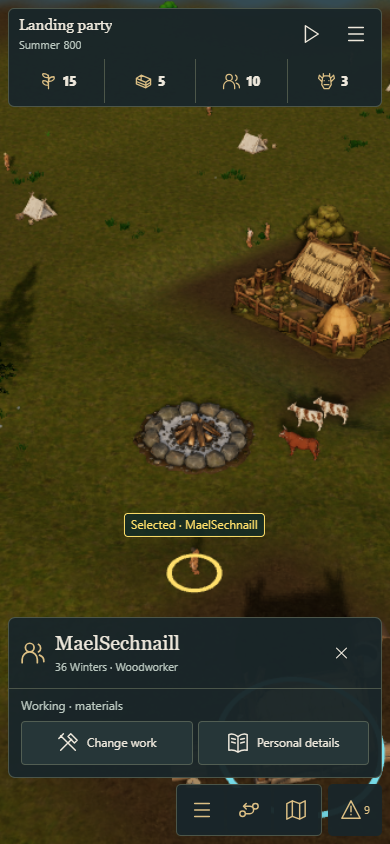

390px touch layout


The shared policy preserves current settings. This experiment changes only the world drawing-buffer ratio; UI text and touch targets keep their CSS size.
Decision: retain. Shipped defaults are unchanged. Physical iPhone/iPad Safari and thermal acceptance remain pending under #151.
Measurements and limitations · Exact pairs and decision · Quality/lifecycle controls

Candidate image captures use Effects Off and frozen time for a stable comparison. Running measurements use identical Low effects on both variants.